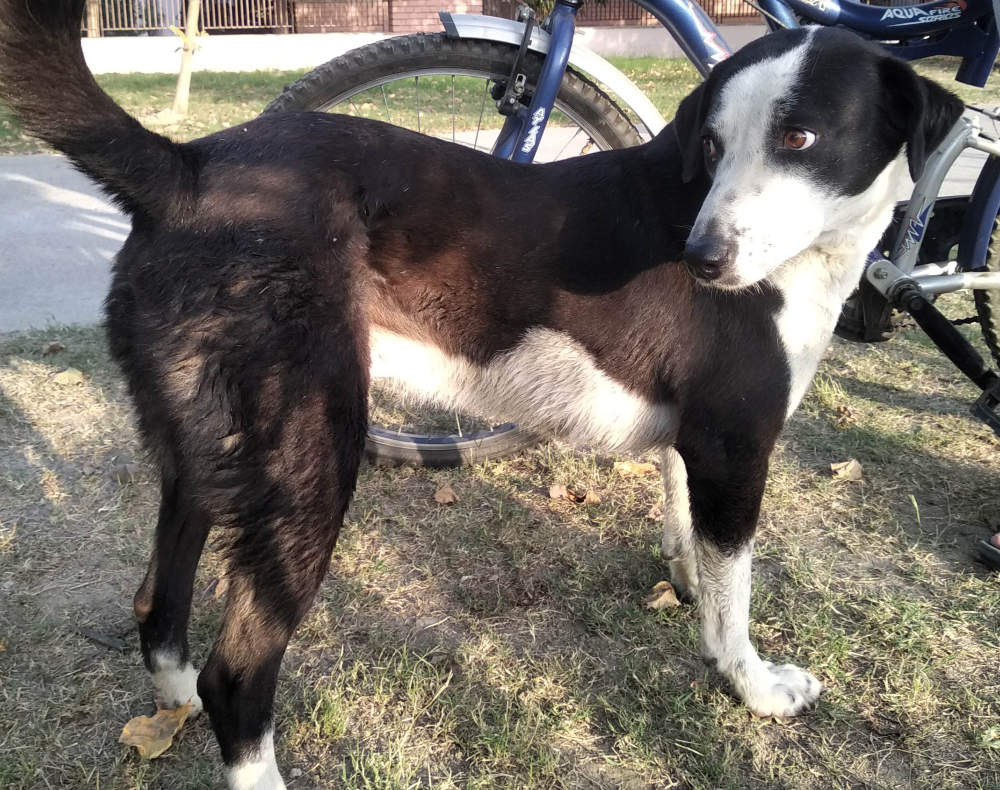
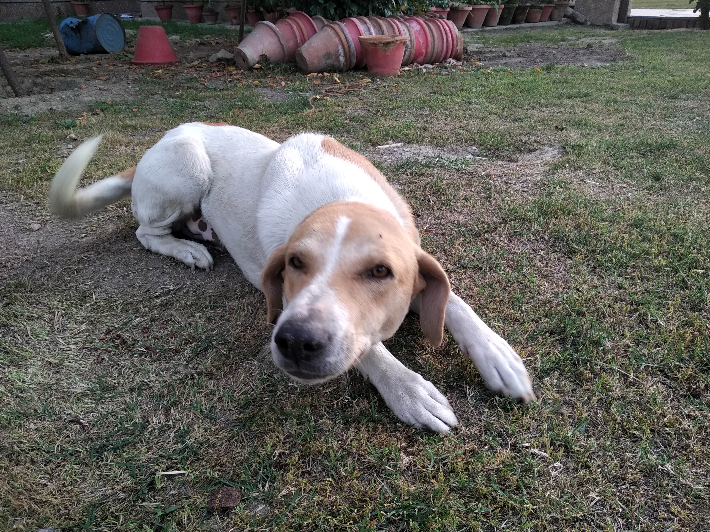
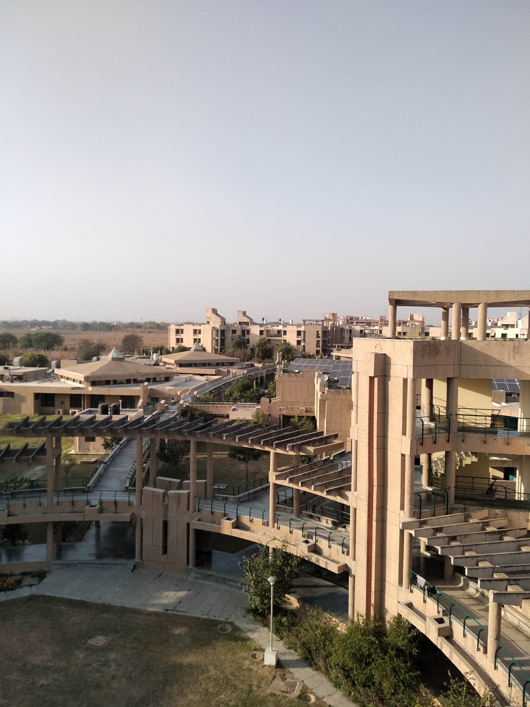
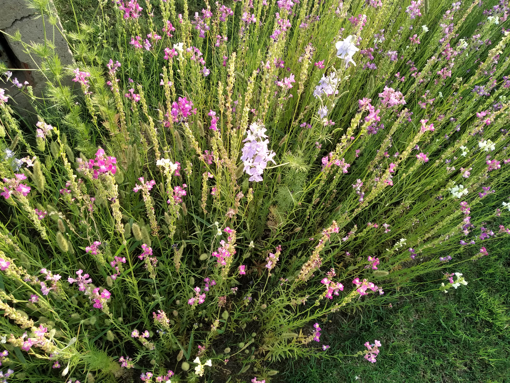
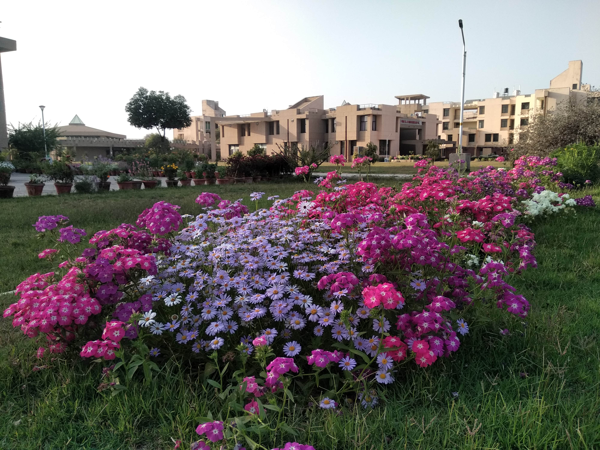
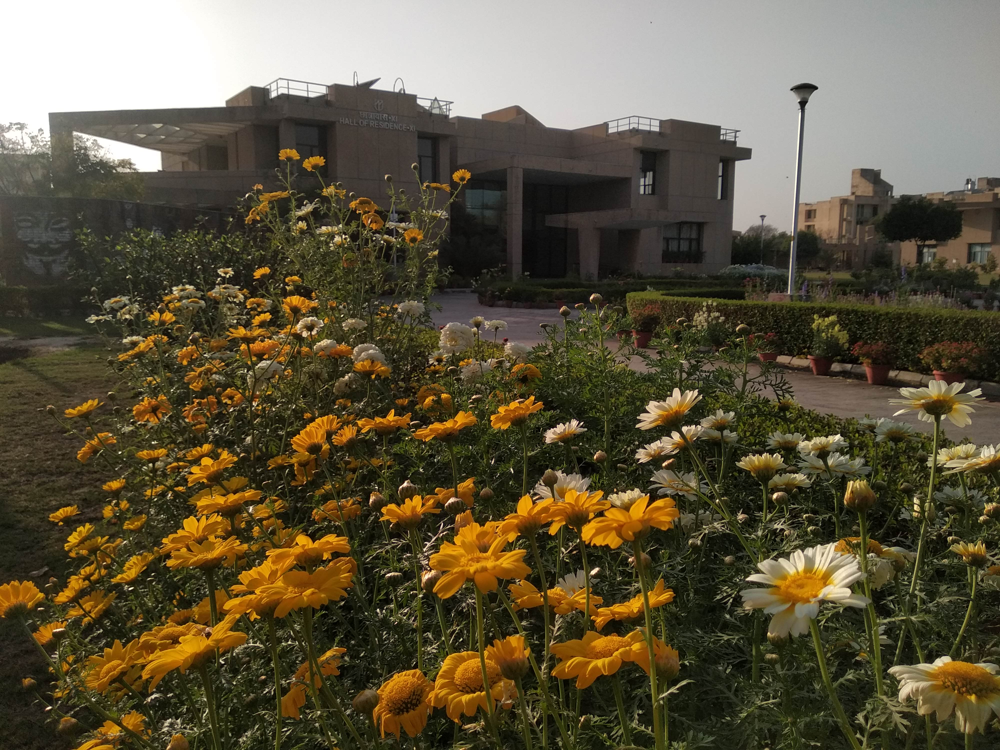
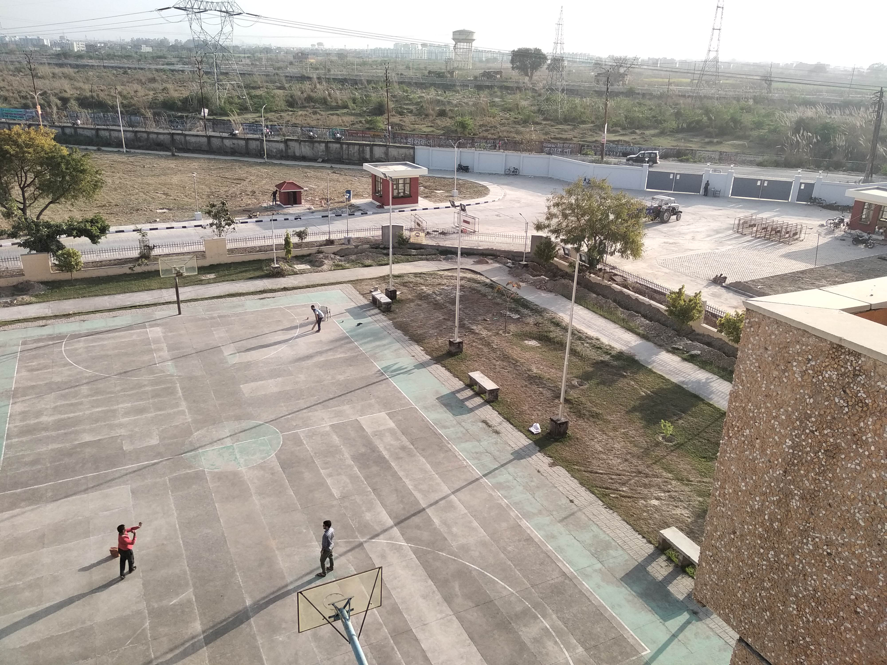

This guy. I will miss him the most. He has always been the sweetest. I got a lot of love from him and in a way I respect his philosophy a lot — which is to stay no longer with someone than when you stop feeling being loved. Do not stay back only thinking that you are being good. It only gives rise to false expectations.

The first time I saw him was as a small pup in my friend's room, where he stayed for around a few days after being rescued from another bunch of dogs who had attacked him. He used to be feeble and alone.
After that he was adopted by a mother doggo in Hall 11 and he grew up with three others, one of which is the ghonchu in the next picture. This one is another sweetheart but a little jealous of his step-brother because of the attention he often gets more than he himself.

Many a times, I have fallen asleep in my room just to wake up to faint scratches (heard as knocks) that either or both would make, waiting for some biscuits or a pat (rarely). If you come to stay in any hall here in IIT Kanpur and love dogs, you are bound to have some great company around, who will blow away all your stress with their overload of cuteness and make you believe that the world means much more than the job or internship offer which you and your peers have submitted to accepting as the last most important thing in your life.
Hall 11
Now a bit about the architecture of Hall 11. Hands down, the twin halls of 11 and 10 are the most aesthetically pleasing compounds in IITK. Hall 11 has the most spacious rooms and restrooms amongst all post-graduate accommodation. Although the greenery is slightly on the lower side, the smacking views from the terrace really stand out. It is said that when IITK was in its initial stages, the location where Hall 11 stands used to be huge wastelands where all the construction waste was dumped. This made it unsuitable for vegetation and big trees. Nonetheless, there are constant efforts made by the authorities to make the hall more and more lovely.

Front side view of Hall 11



The gardeners put up a fair show all throughout winter. At times it really feels more like a resort than a hostel for students to stay. What intrigues me is how these column-like plants are able to sustain their weight without buckling on such seemingly fragile structures.
That is Hall 10 in the distance — just a more green counterpart of Hall 11 with many more fruit trees including Guava, Amla (Indian Gooseberry) and mini-Oranges. There is a common ground in between the two halls and it often serves as the place for socialising after dinner, football matches and lazy Sunday afternoons with age-old friends.
